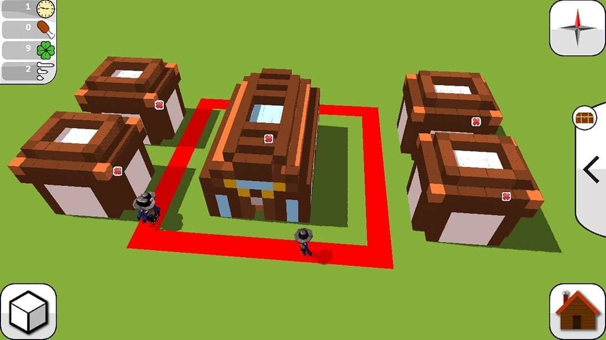
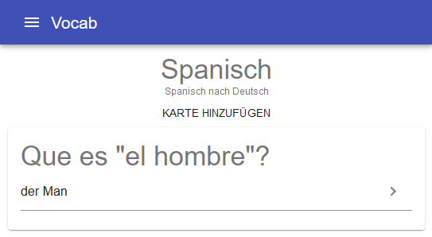

I'm still going to school, but I'm looking forward to get my Abitur soon.
I speak German, English (C1, Cambridge Exam) and a bit of Spanish, feel free to ping me in any of those languages on SO for questions related to programming and via Email concerning everything else.
At school I had to learn Java during my CS classes, but actually I prefer to use JavaScript, which I'm learning since more than 5 Years (you'll never stop). As I learned a lot from online ressources, I thought it would be good to help some others with coding just as others have helped me, thats why I participate on StackOverflow. Through that I solved problems for others in many JS related technologies, such as React and NodeJS. Recently I started learning Kotlin, which is my second favourite programming language now (especially Coroutines [= multithreaded green-threads] are fun). To understand how computers work (and to annoy my math teachers) I once wrote some small Assembly (Z80) programs for my calculator, but while it helped me understanding interrupts and pointers and other low-level things, I prefer to write code on a higher level.
Projects
Claim the Unknown
 A multiplayer open-world strategy game for Android, developed in Kotlin (> 15k LOC) on the frontend and Typescript/Nodejs (> 10k LOC) on the backend. Developed together with four others, me working as a FullStack programmer. The players see each others in realtime, they can design houses and place them on the map, connect them with streets and let workers work on them. Ressources are generated at mines and transported to fabrications, workers eat & sleep and get children.The release will be in
Xdays
See more photos on Instagram
Macht mit! Niedersachsen
A small webpage written in TSX using React to motivate people in my home state to talk to their representatives and inform themselves about political topics. It was developed as part of my Seminarfach "Computing & Society" together with a friend of mine (She collected all the data and wrote the texts while I developed the Webapp). sourceVocab
 A small WebApp to learn vocabularies written in TSX using React, developed together with Alex as part of our CS class.Papers:
Facharbeit - Electronic Voting: An opportunity or liability for society?
Vorfacharbeit - Could and should the criminal justice system be able to bypass iOS security?
As I participated a lot on StackOverflow I've written a lot of answers, some of them are worth reading, here are my favourites.Blog - Random things I'd like to talk about
1.0 - Some honest words from a person often called "clever"
A week ago I received my Abitur grades. All the grades I received during the last two years were summed up including those of my final exams, ending up at 833 / 900 points (as one can choose which lessons to take and how often, some of the grades were excluded, some were counted twice, and some had to be included. Then the resulting number was scaled in a way that the maximum number of points was 900 [as some people had more lessons than others]), and looked up on a scala ranging from 0.7 (best) to 6.0 (worst). 833 is a 1.0 on that scala, which was the best grade reached at my school. Since then, I received a lot of congratulations and even the newspaper asked for an interview. While I appreciate that attention, I'm personally not really enthusiastic about it. That has various reasons:(1): I don't understand the grading system, and I consider it unfair
My grades in Math, Physics and CS were weighted twice, and I'm certainly interested in those. I'm not good at Art, Geography, Biology, History but I didn't have to take courses in any of these. Others were unlucky and were forced to participate in courses they hate. I also had some courses which were not that successful (Spanish for example) but for some reasons I can exclude those rather bad grades, whereas others had to include them. I (the best student at my school) don't understand the grading system, cause it is overly complex, gets regularily changed, and gets changed according to the needs of the current government (For some reason states seem to compete about the "best" Abitur). While I profited from that system somehow, others did not. A simplification of the overall grading system, and a unified system across Germany would make the system more transparent and understandable, thus resulting in fairer grades.(2): There can't be unbiased and totally objective grades
In some courses, Politics for example, the grades are really up to the subjective judgement of the teacher. I had rather friendly teachers in those subjects and the average grade of some of my courses were rather over the average of courses from other teachers. For sure teachers cannot be totally unbiased, empathy is human. I had luck to have friendly teachers, whereas others had to fight for their grades.(3): I don't think that a single number is able to accurately describe the abilities of a human being
As I do have 1.0, people think that I know everything, that I can solve complicated tasks in every subject, that I'm genius. That's just not true. I'm really bad at remembering names, dates (especially birthdays), vocabularies and many other things. My handwriting is a mess, and I can't draw pictures (or in other words: If I draw a picture it just looks terrible). I'm not that sporty (I'm not really unathletic either, but hey, I got 14/15 points in sports). I'm not that great at writing creative texts, I'm not that good at learning languages (except for English, let's not talk about Latin...). I'm not good at ... You see were this is going. At the end I'm far from perfect, and I hate it if people believe I am. Yes, I'm quite good at CS, Maths and Physics, but thats more or less it. Other people are great at other things. I know some people that can draw really stunning pictures in minutes, some are really great at holding presentations, some are great at communicating (yes, I consider that a skill), some are great at managing and organizing things, some are great at cheering up others, some come up with interesting ideas every few seconds (yes, I mean you, Niklas), some are great at ... But all those precious skills are not considered "genius", nor are they graded in the Abitur.I don't think that me having 1.0 makes me more skilled or superior than others. I don't think that 1.0 tells anything about me. I don't think that 1.0 is something to pursue. I don't think that someone with 1.0 is more "clever", more "genius" or more skilled than someone with 1.4, 4.0, or someone with no formal education at all. The same applies to the "IQ Test" or any other ranking system for humans as a whole.
I'm still surprised that so many people think, that such a complicated thing as a brain (/human) can be reduced to a single number. Einstein once said (briefly) "Make things as simple as possible, but not too simple".
The largest organization for "exceptional talents" (Hochbegabte), considers people as "exceptional" if someone reaches a score of 130 in their "IQ Test". I consider that the dumbest rule one could think of. I haven't yet taken such a test, although an "exceptional talent" recommended me one. I'm not exceptional², and I'm not going to take such a senseless test either.
I'm really proud of my skills in CS, Physics and Math, and I think that my grades in these subjects are justified (15, 15, 15), but everyone has a skill to be proud of, it's not just me.
² I'm Jonas.